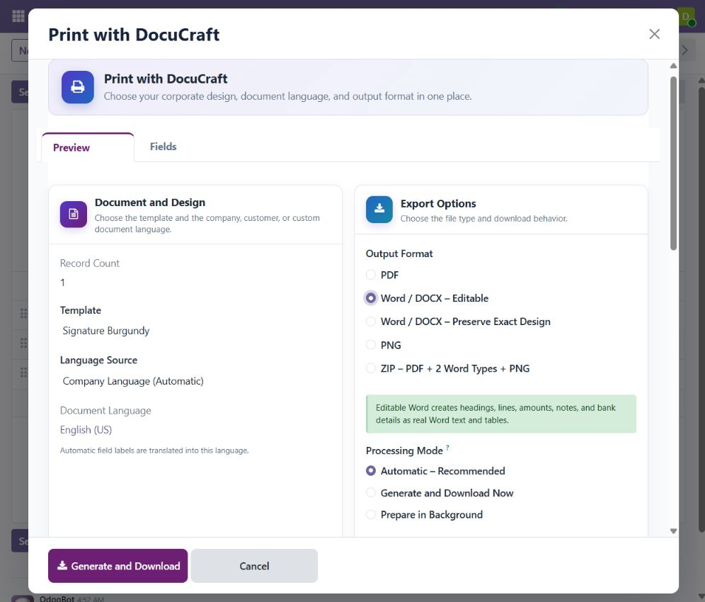
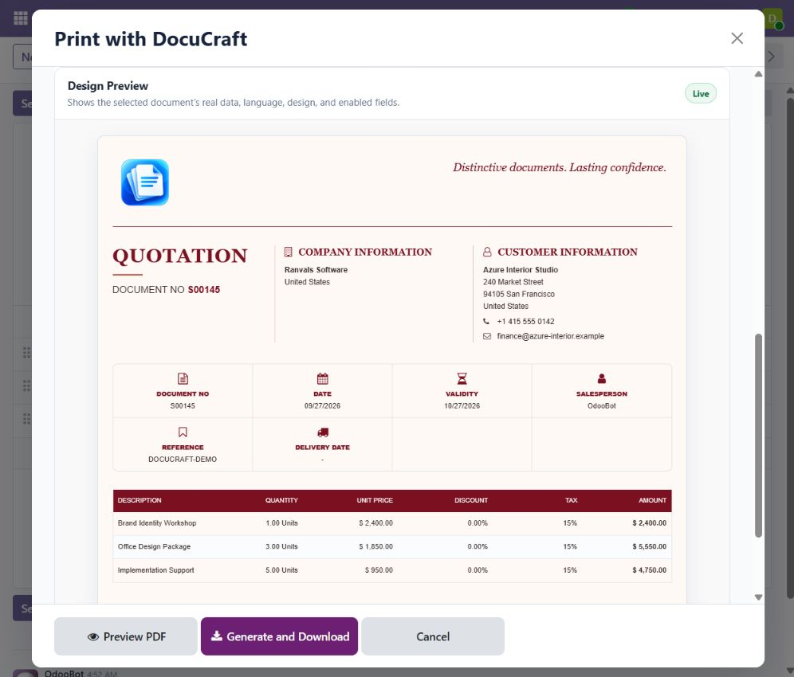
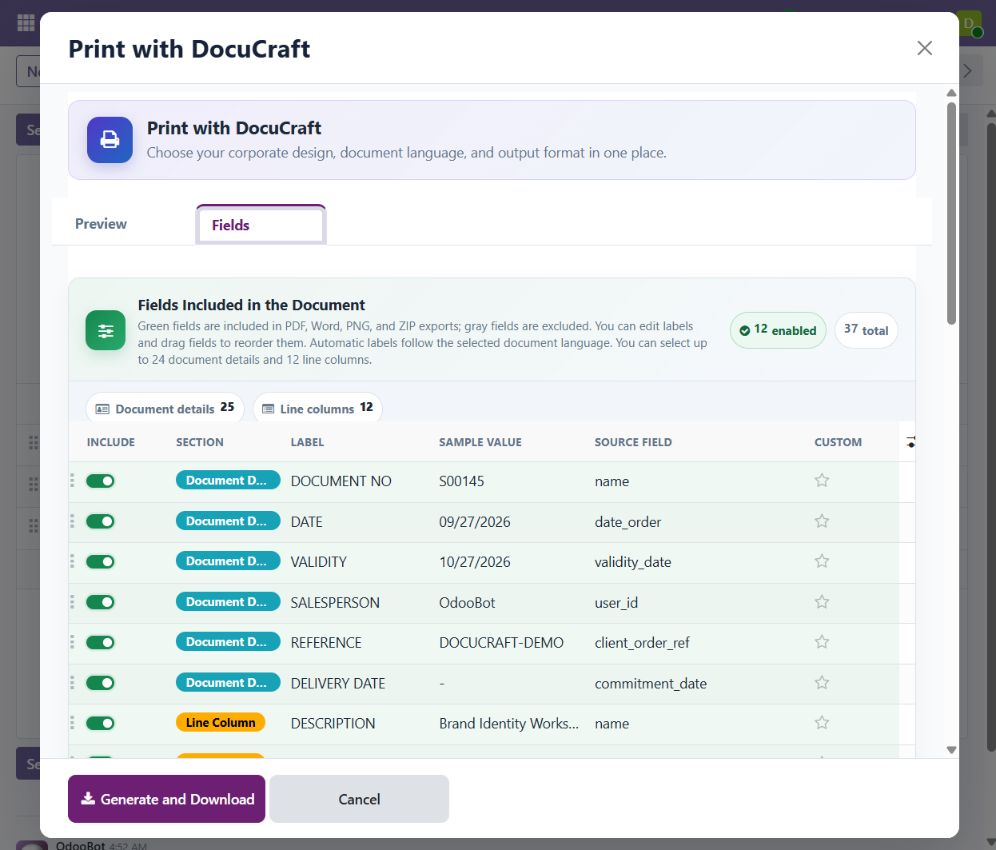
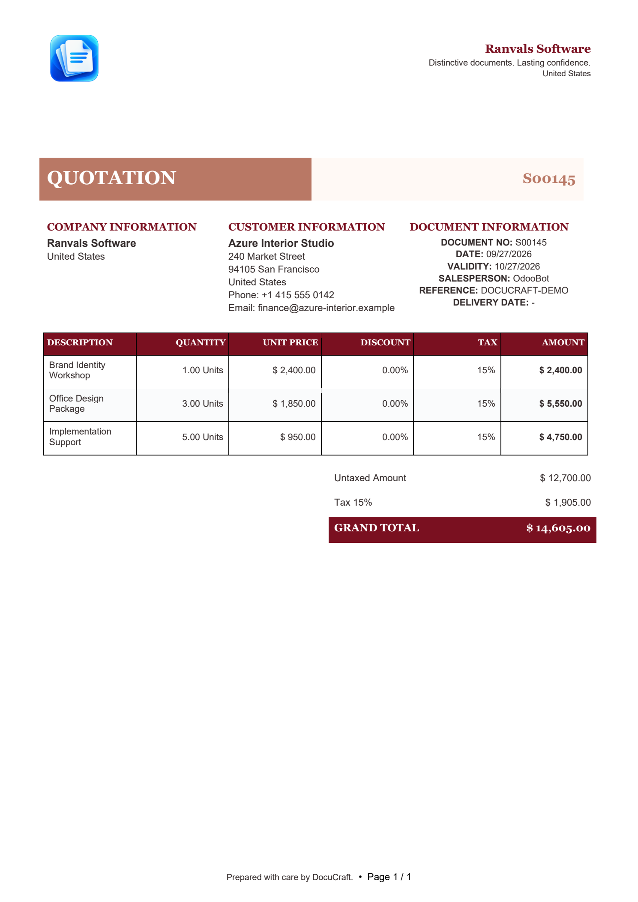
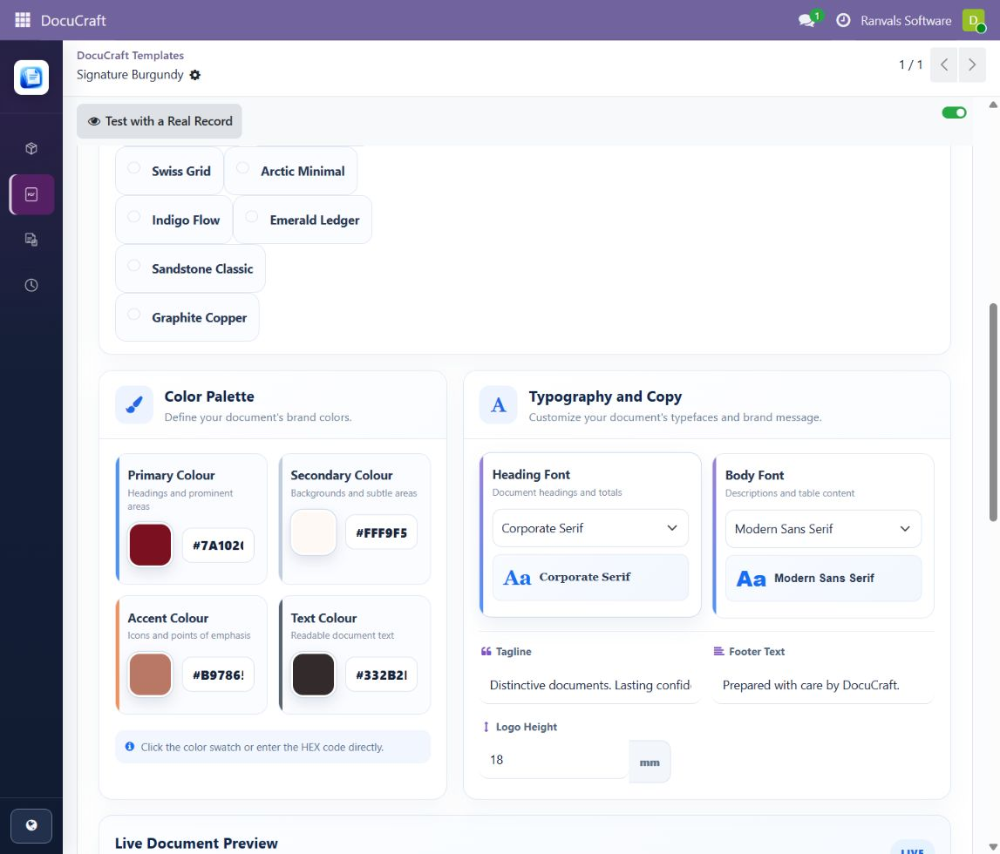
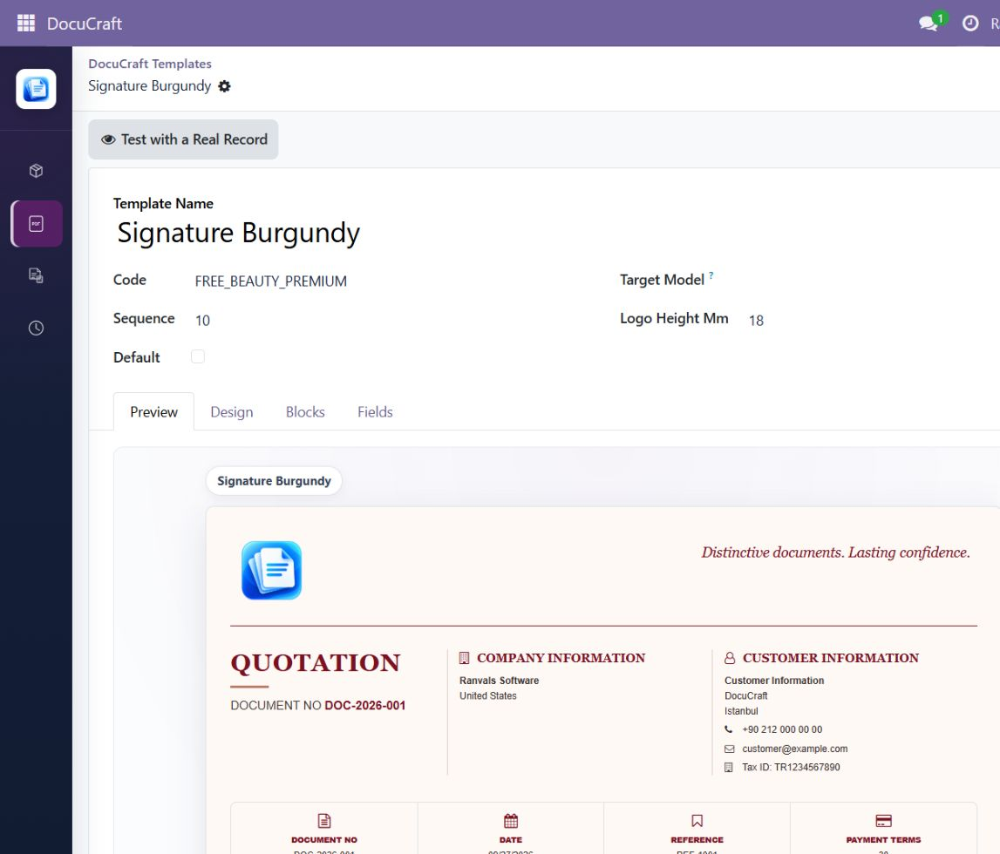
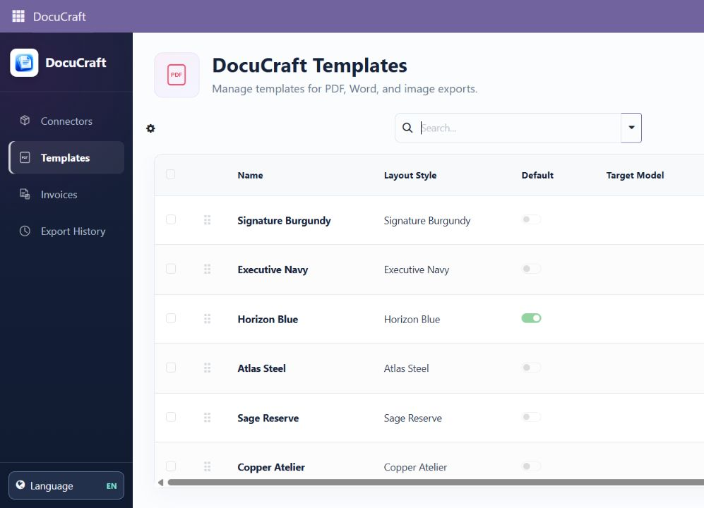
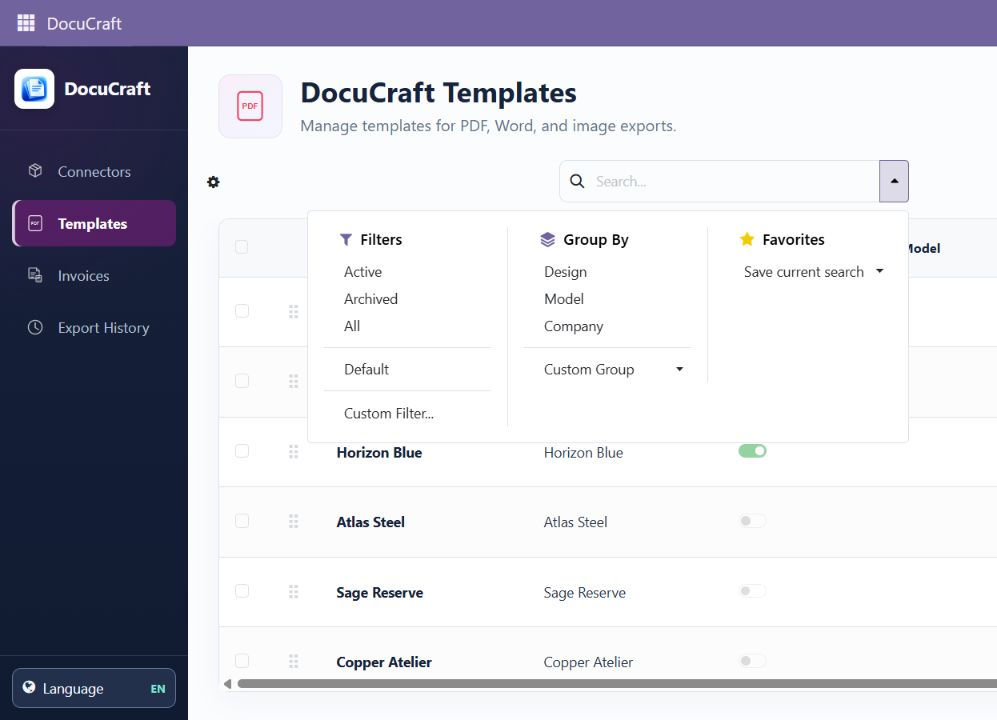

DocuCraft Word PDF Report Designer
Professional Odoo documents with a clear Word, PDF, PNG and ZIP export workflow.
Product support
odoo@ranvals.comDeveloped and supported by Ranvals Software.
Odoo 19 Enterprise + Studio
Design professional quotations, sales orders, invoices, credit notes, requests for quotation and purchase orders without rebuilding every report by hand. Choose a corporate layout, select the fields that belong in the document, preview the result and export it from one guided DocuCraft Print dialog.

Real product screens
Every image below comes from the working Odoo interface and a generated Word document.
Choose editable DOCX, design-preserved DOCX, PDF, PNG or the complete ZIP package from one dialog.
Review the selected design, language, logo, customer, lines and totals before creating the file.

Enable only the useful headings and line columns, rename them and keep the same selection across every output.

The generated DOCX keeps text, document information, product lines and totals as Word content.

Adjust template colors, 23 heading/body fonts, copy, logo sizing, blocks and visible fields while checking the corrected document preview.


Manage the 14 starter designs and recover inactive templates at any time through the Active, Archived and All filters.


One document workspace
DocuCraft combines template selection, field control, language resolution, live preview and download in a single application. It is built for daily business documents rather than one-off report development.
Core capabilities
Create, standardize and download documents without adding separate modules for every format.
Generate native DOCX files with editable paragraphs and tables when the recipient needs to revise the document in Microsoft Word or another compatible editor.
Place rendered document pages in a DOCX container to preserve the selected PDF layout. This mode prioritizes visual consistency; its page content is not intended for full text editing.
Download standard PDF reports, render page images as PNG, or package multiple generated files into a ZIP archive for convenient batch delivery.
Discover relevant fields from the active Odoo form and its line items, including eligible Odoo Studio fields. Turn fields on or off, rename headings and drag them into the desired order.
Preview the selected real layout with localized sample data. The export dialog separates Preview and Fields into focused pages while keeping download actions easy to reach.
Keep templates company-specific, assign defaults and apply automatic template rules. Archived designs remain recoverable through Active, Archived and All filters.
Word is a first-class format
Many Odoo document tools stop at PDF. DocuCraft provides two clearly separated Word modes so users can select the result that fits the job.
Best for contracts, cover text, quotations or invoice copies that need human edits after export. Text and supported tables remain native Word content.
Best when the Word file should follow the selected PDF design as closely as possible. Each rendered page is placed into DOCX as visual content.
Integrated business flows
The same guided export experience is available where users already work.
SALES
ACCOUNTING
PURCHASE
Corporate design library
Begin with a ready-made design, then adjust colors, heading and body fonts, slogan, footer note, logo height and visible business fields. The library covers restrained, executive, modern and classic styles without tying a design to one industry.
Corporate serif, modern and technical sans serif, editorial, Lato, Roboto, Open Sans, Montserrat, Raleway, Oswald, Tajawal, Fira Mono, humanist, Helvetica/Arial, Verdana, Tahoma, Lucida Sans, Times New Roman, Garamond, Palatino, Cambria, Bookman and corporate monospace.
Field selection that follows the record
DocuCraft reads useful business fields from the current form and line list while filtering technical widgets, counters and implementation-only values. The user can make a deliberate selection before export.
Language-aware documents
Automatic language resolution keeps headings and common document terms consistent while preserving user-edited labels. Dates, numbers and monetary values follow Odoo localization rules for the resolved language.
Resolve the document language from the company or customer/vendor configuration.
Choose another supported active Odoo language for a particular export when needed.
Built-in document labels cover English, Turkish, German, French, Spanish, Italian, Portuguese, Russian and Arabic.
Interface translation files are included for English (US and UK), Turkish, German, French, Spanish, Italian, Portuguese, Russian and Arabic.
Built for regular operations
Small exports can download immediately. Larger, multi-record or multi-format requests can be processed through DocuCraft's background queue so users can continue working.
Templates and export jobs respect company and user access. Defaults can be managed independently for supported document models.
Template snapshots and version history help administrators review changes and restore an earlier saved design.
Document generation runs on the Odoo server with the declared Python libraries. The module does not require a separate SaaS account or activation service.
Compatibility and requirements
| Odoo version | This package is for Odoo 19. Use the matching package for each Odoo major version. |
|---|---|
| Required edition | Odoo Enterprise with the Studio application. The module depends on web_studio and is not a Community Edition module. |
| Deployment | Odoo.sh or on-premise Odoo Enterprise. Odoo Online/SaaS does not allow this module's custom Python dependencies and is not supported. |
| Odoo dependencies | base, web, mail, sale_management, account, purchase and web_studio. |
| Python dependencies | python-docx, pypdfium2 and Pillow. These must be available in the Odoo Python environment. |
| PDF engine | Odoo's supported wkhtmltopdf installation must be operational for PDF, PNG, design-preserved Word and ZIP output. Native editable Word does not depend on the PDF engine. |
| Supported models | Sales orders, accounting moves and purchase orders through their supported document flows. |
| License | Odoo Proprietary License v1.0 (OPL-1). |
ranvals_document_studio folder in your custom addons repository.Frequently asked questions
No. Editable Word creates native editable DOCX content. Visual Word is designed to preserve the PDF appearance and places rendered pages into DOCX.
PDF, PNG, design-preserved Word and the complete ZIP use Odoo's PDF renderer. Editable Word is generated natively and remains available independently.
No. DocuCraft requires Odoo Enterprise and the Odoo Studio application because the module integrates with Studio's report-design workflow.
No. Use Odoo.sh or an on-premise Enterprise installation where custom modules, Python packages and Odoo's PDF engine are available.
Eligible fields that are visible on supported forms and line lists, including eligible Studio fields, can be discovered. Access rights and supported field types still apply.
Yes. Templates can be company-specific, and default or automatic template selection can be configured for supported records.
Professional Odoo documents with a clear Word, PDF, PNG and ZIP export workflow.
Product support
odoo@ranvals.comDeveloped and supported by Ranvals Software.